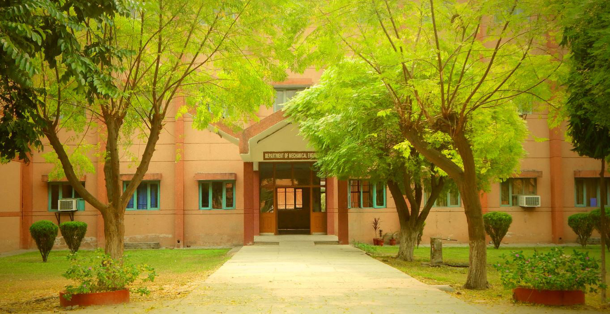

Schedular of Mechanical Department

This page includes the information of all the subjects that are taught to students
who are in
Mechanical Engineering.
Head of Department : Dr. Kulwant Singh
Office phone
:01672-253123, 01672-253124
Office fax
:01672-253123
Vision of Department
The department shall strive to act as a podium for the development and transfer of technical competence in academics, impart appropriate skills, entrepre
neurship and research in the field of Mechanical Engineering to meet the changing need of society.
At present, there are 33 highly motivate faculty members in the department, who besides their regular activities of teaching, do research and interact with
industries for training and consultancy work. Faculty is actively involved in different sponsored projects funded by DST, MHRD etc. Financial assistance is
also being received to carry out Rural Development Activities. Patents are also to the credit of the faculty of the department.